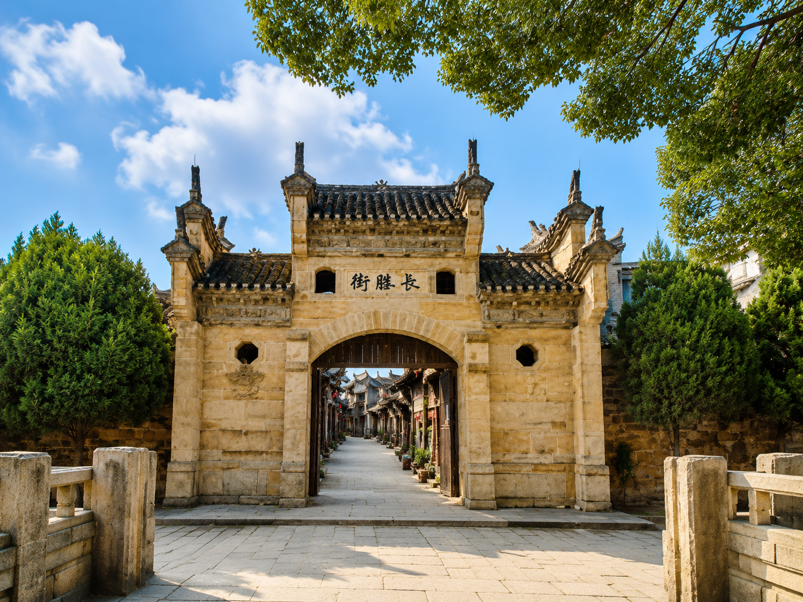
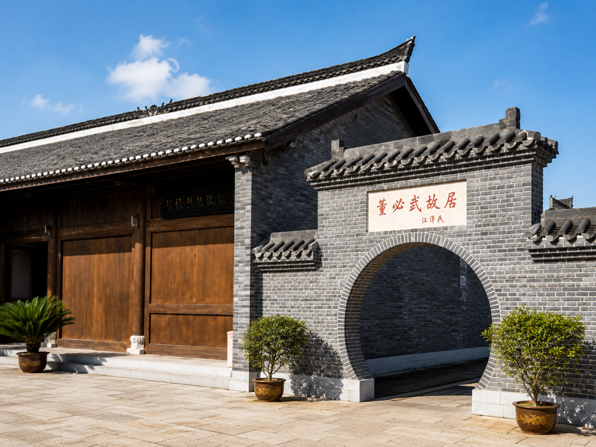

01
信仰 · 热血 · 红色记忆
黄麻起义和鄂豫皖苏区纪念园
这里是了解红安红色历史的重要窗口。跟随语音导览，回望黄麻起义的烽火岁月， 感受革命先辈坚定而炽热的信仰力量。
Audio Guide
戴上耳机，从黄麻起义和鄂豫皖苏区纪念园出发，走进七里坪长胜街， 再到董必武故居，在声音里感受红安的信仰、街巷与初心。
信仰 · 热血 · 红色记忆
这里是了解红安红色历史的重要窗口。跟随语音导览，回望黄麻起义的烽火岁月， 感受革命先辈坚定而炽热的信仰力量。

02老街 · 旧址 · 非遗线索
长胜街保留着红色街巷的历史肌理，也连接着红安人的日常生活。 在这段声音里，听见老街旧址、地方记忆与非遗线索的交织。

03初心 · 家风 · 精神传承
从故居里的家风与初心出发，理解红安精神的朴素底色。 这段导览将带你感受一针一线背后的情感力量与精神传承。